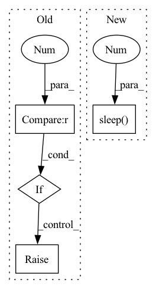

Pattern ID :24850
Before Change
return offset
except Exception as e:
cnt += 1
if cnt >= 5 :
raise Exception(f"Cannot Connect To NTP Server: {ntp_server_url}")
@staticmethod
def get_instance(args):After Change
return offset
except Exception as e:
cnt += 1
time.sleep(1 )
if cnt >= 3:
logging.info("Cannot Connect To NTP Server: {}, details: {}".format(ntp_server_url,
traceback.format_exc()))
breakIn pattern: SUPERPATTERN
Frequency: 3
Non-data size: 4
Instances Fragment ID: 76693222
Project Name: fedml-ai/fedml
Commit Name: e04ac2384189c3ffb8ea27b34e86c16cf605728c
Time: 2023-03-23
Author: alex.gpt.llm@gmail.com
File Name: python/fedml/core/mlops/mlops_runtime_log.py
M Class Name: MLOpsRuntimeLog
N Class Name: MLOpsRuntimeLog
M Method Name: get_ntp_offset(1)
N Method Name: get_ntp_offset(1)
M Parent Class:
N Parent Class:
M File Name: python/fedml/core/mlops/mlops_runtime_log.py
N File Name: python/fedml/core/mlops/mlops_runtime_log.py
M Start Line: 107
M End Line: 110
N Start Line: 103
N End Line: 114
Before Change
// Exit once the trial has, for 1 second, been in a terminal state and sent no logs.
if changes or resp.trials_by_pk.state not in constants.TERMINAL_STATES:
change_time = time.time()
elif time.time() - change_time > 1 :
raise KeyboardInterrupt()
except KeyboardInterrupt:
state_query = api.GraphQLQuery(args.master)
state_query.op.trials_by_pk(id=args.trial_id).state()After Change
print_logs()
if state in constants.TERMINAL_STATES:
break
time.sleep(0.2 )
except KeyboardInterrupt:
pass
finally:
print( Fragment ID: 76693223
Project Name: determined-ai/determined
Commit Name: 3da2ccbfa9a48a61c87488858d89fe84f1997978
Time: 2020-04-30
Author: yoni@determined.ai
File Name: cli/determined_cli/trial.py
M Class Name: AnonimousClass
N Class Name: AnonimousClass
M Method Name: logs(1)
N Method Name: logs(1)
M Parent Class:
N Parent Class:
M File Name: cli/determined_cli/trial.py
N File Name: cli/determined_cli/trial.py
M Start Line: 128
M End Line: 168
N Start Line: 99
N End Line: 131
Before Change
return offset
except Exception as e:
cnt += 1
if cnt >= 5 :
raise Exception(f"Cannot Connect To NTP Server: {ntp_server_url}")
@staticmethod
def get_instance(args):After Change
return offset
except Exception as e:
cnt += 1
time.sleep(1 )
if cnt >= 3:
logging.info("Cannot Connect To NTP Server: {}, details: {}".format(ntp_server_url,
traceback.format_exc()))
break Fragment ID: 76693221
Project Name: fedml-ai/fedml
Commit Name: 223a1f9874c1eb0af7bc4ec925cbaaa3199902bc
Time: 2023-03-23
Author: alexliang.kh@gmail.com
File Name: python/fedml/core/mlops/mlops_runtime_log.py
M Class Name: MLOpsRuntimeLog
N Class Name: MLOpsRuntimeLog
M Method Name: get_ntp_offset(1)
N Method Name: get_ntp_offset(1)
M Parent Class:
N Parent Class:
M File Name: python/fedml/core/mlops/mlops_runtime_log.py
N File Name: python/fedml/core/mlops/mlops_runtime_log.py
M Start Line: 107
M End Line: 110
N Start Line: 103
N End Line: 114